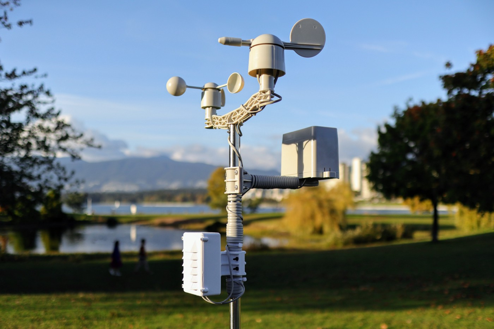

IoT in Agriculture
The Internet of Things (IoT) is revolutionizing agriculture by integrating smart devices and sensors into farming operations, enabling more precise and efficient management of resources. IoT devices can monitor various environmental conditions, such as soil moisture, temperature, humidity, and light levels, in real-time. This data helps farmers make informed decisions about irrigation, fertilization, and pest control, optimizing crop growth and reducing waste. Additionally, IoT-enabled systems, such as automated irrigation controllers and drone technology, streamline labor-intensive tasks, enhancing productivity. By connecting machinery, livestock monitoring devices, and weather stations, IoT fosters a smarter and more sustainable approach to farming, ensuring higher yields while conserving resources.
IoT is used as a smart farming solution for monitoring the crop field from anywhere. It involves using sensors to track soil moisture, crop health, livestock conditions, temperature, etc.
IoT technologies make it possible to create automated irrigation structures where water resources can be managed efficiently. By collecting crop data such as moisture and temperature, IoT technologies can help determine the right amount of water for crops every season.

Geographic Information Systems (GIS) in Agriculture
GIS in agriculture relies on technology such as drones and satellites to understand crop position and types, fertilization level, soil status, and related information. With data generated from GIS remote sensing devices and software, farmers can determine the best location for crop planting in the field and make informed decisions on how to improve soil nutrition.
In livestock rearing, GIS software monitors the movement of animals. This, in turn, will help farmers track animals’ health, fertility, or nutrition.